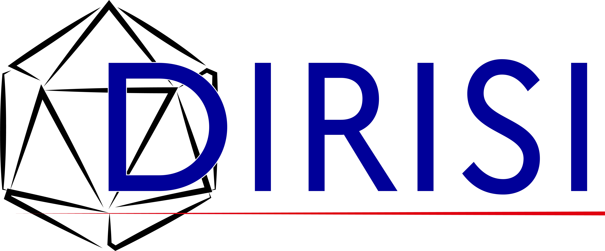
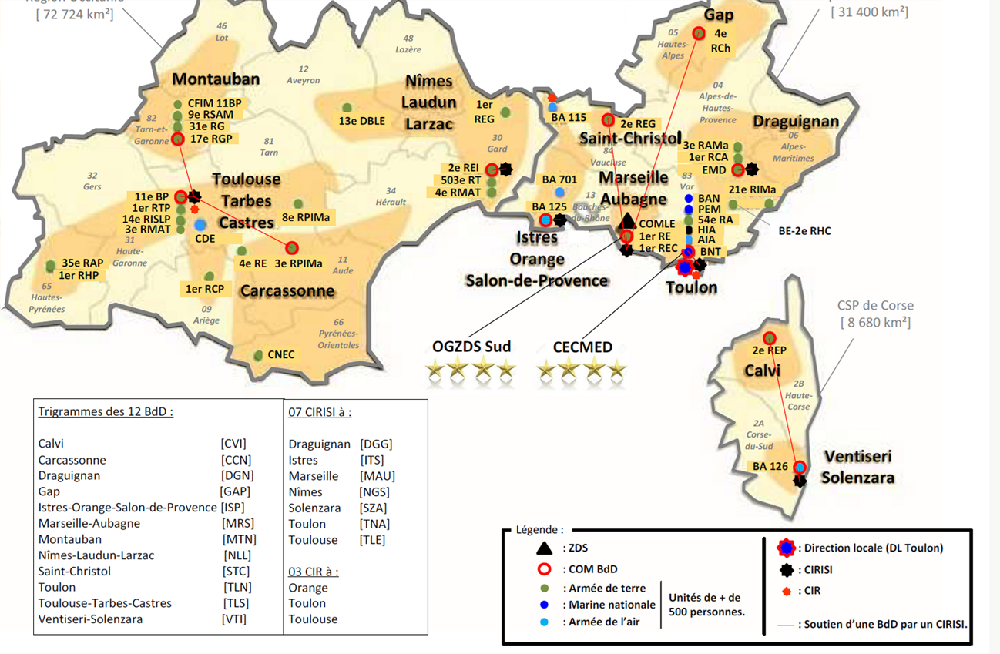
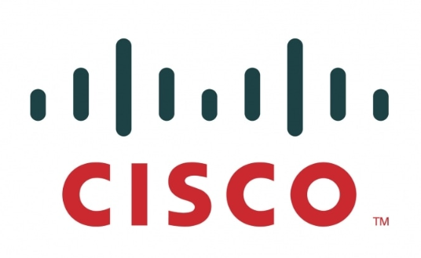

Présentation de l’organisme
La DIRISI (Direction Interarmées des Réseaux d’Infrastructure et des Systèmes d’Information) est l’opérateur des systèmes d’information et de communication du Ministère des Armées.
Elle assure la conception, le déploiement, l’exploitation et la sécurisation des infrastructures réseaux militaires pour l’Armée de Terre, la Marine Nationale, l’Armée de l’Air et de l’Espace ainsi que la Gendarmerie.
Le centre d’affectation, le CMO-RD de Toulon, intervient sur les réseaux de desserte et infrastructures locales de la zone sud, incluant des sites sensibles et stratégiques.


Contexte du stage
Ce stage de première année s’inscrit dans le cadre de ma formation en BTS SIO option SISR. Il avait pour objectif de me confronter à un environnement technique structuré et sécurisé, au sein d’une infrastructure critique nationale.
J’ai intégré une équipe réseau chargée de l’exploitation, de la maintenance et du dépannage des équipements actifs, tout en respectant des procédures strictes liées au contexte militaire.
Missions réalisées
Participation à l’exploitation des infrastructures réseau
- Configuration et vérification de switchs niveau 2
- Intervention sur équipements Cisco, Allied et HP
- Analyse de pannes réseau et traitement d’incidents
- Tests de connectivité et validation de configurations

Découverte des équipements de sécurité
- Manipulation et analyse d’un pare-feu Stormshield SN510 dans un environnement professionnel.
- Étude et compréhension des règles de filtrage réseau (politiques de sécurité, gestion des flux entrants et sortants).
- Découverte des principes d’architecture sécurisée (segmentation réseau, zones de confiance, protection périmétrique).

Immersion en environnement professionnel structuré
- Participation à la préparation d’une plateforme technique
- Découverte du datacenter
- Travail en collaboration avec l’équipe CMO-RD
- Respect des procédures et des normes de sécurité
Compétences développées
Compétences techniques
- Configuration d’équipements réseau professionnels
- Diagnostic et résolution d’incidents
- Compréhension des architectures sécurisées
- Manipulation d’équipements de sécurité réseau
Compétences professionnelles
- Rigueur et respect des procédures
- Travail en équipe technique
- Adaptation à un environnement exigeant
- Communication professionnelle
Bilan du stage
Ce premier stage m’a permis de découvrir un environnement professionnel structuré et hautement sécurisé. J’ai pu mettre en pratique les bases acquises en formation tout en développant mes compétences en réseaux.
Cette immersion au sein de la DIRISI m’a apporté une première expérience concrète dans l’administration d’infrastructures critiques et a renforcé mon intérêt pour le domaine des systèmes et réseaux.
Elle constitue une étape déterminante dans ma progression vers des responsabilités techniques plus avancées lors de mon stage de deuxième année.